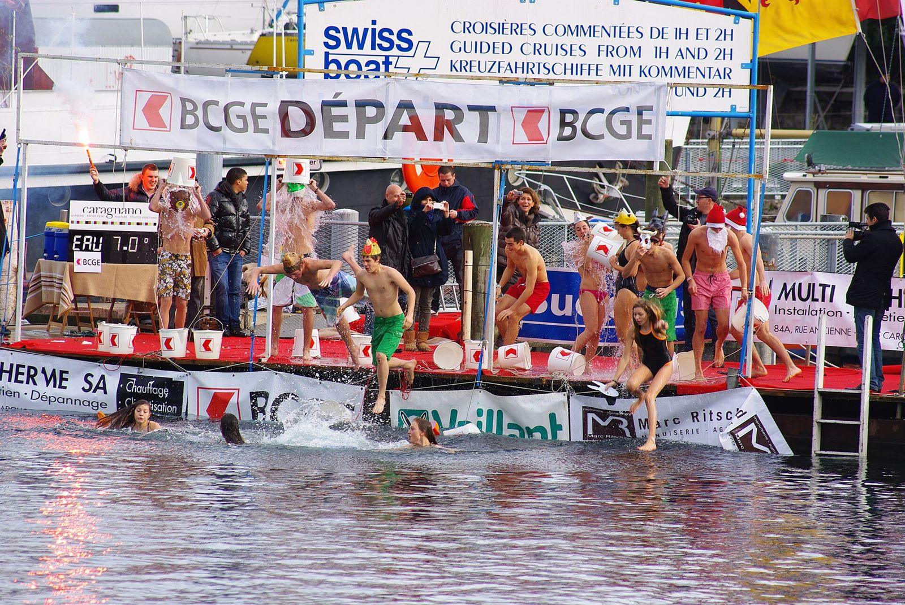

In short
Winter swimming in Lake Geneva starts when the water drops below 15 °C, roughly from October to May. The Swiss Lifesaving Society (SLRG/SSS) gives a simple rule: stay in no more minutes than the water has degrees (5 °C = 5 minutes at most). Get in slowly, keep your head out of the water with a cap on, never go alone, get out at the first sign of feeling unwell, then dry off and dress warmly, without a hot shower.
How long can you stay in cold water?
The Swiss Lifesaving Society’s cold-water sheet gives an easy rule of thumb: the water temperature in degrees is the maximum swim time in minutes. At 10 °C, no more than 10 minutes; at 5 °C, 5 minutes. It is a maximum, not a target: the first few times, a few strokes are plenty.
Today’s water temperature is shown below, and beach by beach in the My Lake app.
How do you get into cold water safely?
- Get in slowly to let your body adjust; no jumping or diving.
- Keep your head out of the water and wear a cap.
- Never go alone: the Swiss Council for Accident Prevention (BFU) also recommends a flotation aid such as a swim buoy.
- Get out straight away if you feel unwell.
- Be in good physical shape: cold water demands it. If in doubt about your health, talk to your doctor first.
What should you do when you get out?
Dry off thoroughly and put on warm, dry clothes right away. The lifesaving society advises against a hot shower straight after, windy spots and hard exercise. A warm drink helps you warm up from the inside.
Where can you swim in winter in Geneva and Lausanne?
Geneva. The Bains des Pâquis are the winter swimmers’ meeting point; their café is open all year, with fondue in winter. In December, the Coupe de Noël race is swum in the harbour. To warm up differently, Sauna Boats Genève runs a floating sauna from Quai Gustave-Ador, near Eaux-Vives beach.
Lausanne. At Bellerive, the Bains des Rives set up lakeside yurt saunas from October to March, with a dip in the lake between sessions, near Bellerive beach.
The list of all 65 beaches gives the water temperature and wind for each one.
Where can you warm up in a sauna by Lake Geneva?
- Sauna Boats Genève, Genève, near Plage des Eaux-Vives: Lake Geneva’s first floating sauna: up to six people, no licence needed in the harbour, departs Quai Gustave-Ador 33.
- Bains des Rives, Lausanne (October to March), near Lausanne – Bellerive: At Bellerive, wood-fired yurt saunas and a lakeside terrace, with a dip in Lake Geneva between sessions, October to March.
- Hammam et sauna des Bains des Pâquis, Genève, near Bains des Pâquis: Sauna, hammam and Turkish bath on the jetty, open in winter until 9.30pm; then straight into the lake. About CHF 20 in winter.
- Saun’Ice Port Gitana, Bellevue, near Bellevue: Private wood-fired sauna by the water on the Port Gitana esplanade, up to 6 people, by booking.
- Saun’Ice Hermance, Hermance, near Hermance: Private wood-fired sauna on Hermance beach (Rue du Nord 44), up to 6 people, by booking.
- Sauna des Bains des Trois Jetées, Nyon, near Nyon: Lakeside sauna, open to the public from 13 October 2026 without booking; private sessions in the evening or early morning.
- SaunaRolle, Rolle (October to March), near Rolle: Volunteer-run community sauna at the campsite, Chemin de la Plage 4: tipi to change in, hot tea, lake dip. CHF 12 a session.
- Steam on the Water, Petit Port Eiffel, Vevey (October to April), near Vevey: Sauna set up at the Petit Port Eiffel with a direct lake view, October to April.
- Steam on the Water, la Maladaire, La Tour-de-Peilz (October to April), near La Tour-de-Peilz: At the Maladaire campsite: barrel sauna, heated yurt and glazed caravan, bookable for groups, October to April.
- La Banquise, Genève (January to April), near Plage des Eaux-Vives: Wood-fired saunas run by the City of Geneva on Quai Gustave-Ador, facing the Jet d’eau, in late winter: 60-minute session for CHF 10, by booking.
- Saunas de Coin Nordic, Publier (Amphion) (September to May), near Publier – Amphion: Saunas with a lake view, daily 10am to 8.40pm from late September to mid-May, by booking.
Hours, prices and booking change from season to season: check with each place.
How does My Lake help with winter swimming?
From October to May, once the water is below 15 °C, the app’s “Swimming” tile becomes “Winter swim”. Its rating depends mostly on the wind: cold water is the point, gusts and waves much less so. The winter swim challenge keeps the date, beach and water temperature of each swim, and your history can be shared in one tap. Read on: the first 90 seconds in cold water, what to bring and warming up afterwards. For the figures, see how Lake Geneva’s temperature is calculated.
Lake Geneva’s water right now
Each beach’s water temperature is in the My Lake app, updated every three hours.
Disclaimer. This article gives general information taken from the sources cited; it is not medical advice. Cold-water swimming puts real strain on the heart and can be dangerous: talk to a doctor before you start, especially with a heart condition, high blood pressure or during pregnancy. Never swim alone and follow lifeguards’ instructions. You swim at your own risk; in an emergency, call 144 in Switzerland or 112.